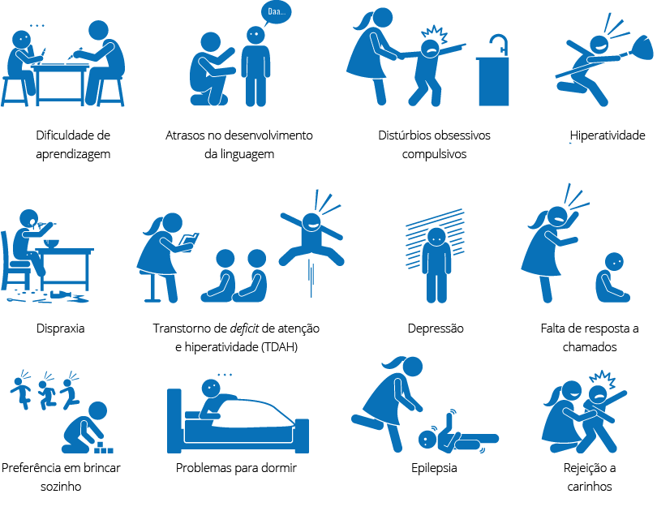

O Transtorno do Espectro Autista se caracteriza por interesses restritos e repetitivos, estereotipias, respostas atípicas às questões sensoriais sobre ou com o ambiente e aversão à quebra de rotinas, o que afeta diretamente a comunicação e a interação social. É importante ressaltarmos que o nível de comprometimento é que delimita a intensidade dos comportamentos e sintomas apresentados, gerando comportamentos disruptivos, como: agressividade ou autoagressão; agitação motora; hiperatividade; alterações de humor, como birras; e descontrole emocional. Essas condições é que impedem ou dificultam a inserção dos indivíduos com TEA nos contextos sociais de maneira geral e efetiva (MATOS, 2013).
Com essas constatações, concluímos que é de suma importância que todos os profissionais envolvidos e atuantes com crianças em fase de desenvolvimento, independentemente da área e atuação – como médicos, psicólogos, terapeutas, pedagogos, psicopedagogos, equipes de avaliação e professores –, saibam identificar e compreender as fases do desenvolvimento infantil, categorizando os comportamentos típicos e, consequentemente, os comportamentos atípicos ou disruptivos.
Livro
O livro Cem dúvidas sobre o autismo apresenta questões importantes sobre o autismo. Com uma linguagem acessível para todos os públicos, desde especialistas até pais e cuidadores, o renomado neuropediatra Prof. Dr. José Salomão Schwartzman expõe importantes orientações sobre o transtorno.
Rio de Janeiro: Mennom, 2018.
O norte avaliativo para a verificação dos sinais de alteração ou deficits, tanto no desenvolvimento fisiológico quanto comportamental, estão discriminados e apresentados no Manual Diagnóstico e Estatístico de Transtornos Mentais (DSM-5) (APA, 2014), por meio dos critérios; e no documento das Diretrizes de Atenção à Reabilitação da Pessoa com Transtornos do Espectro do Autismo (BRASIL, 2013). Os principais critérios devem ser entendidos em sua essência, para que pais e profissionais possam atuar diante das consequências e características que afetam diretamente a evolução do tratamento e a aquisição de novas habilidades.
Nesse contexto, é de extrema importância a atenção de todos os profissionais da educação, mais precisamente do professor, que deve ser considerado como parte do tripé que alicerça o processo evolutivo no desenvolvimento – pais, profissionais da saúde e profissionais da educação – desde a percepção dos sinais de alerta até o pós-diagnóstico. Nesse sentido, é importante frisarmos que não estamos abordando o ato de diagnosticar, mas de atentar ao processo de aprendizagem propriamente dito.
fizkes/Shutterstock
Os critérios apresentados e descritos no DSM-5 explanam com precisão os comportamentos globais típicos e os não típicos ou adaptativos da criança que apresenta o TEA. Mediante essa normatização, é possível realizar uma observação comportamental precisa, com exemplos evidentes e objetivos, a qual deve nortear a trajetória tanto de investigação quanto de atuação. É importante destacarmos que, quando nos referimos ao autismo, a observação comportamental deverá ser constante e ininterrupta ao longo de toda a vida do indivíduo que apresenta o espectro.
Outro ponto importante na compreensão do TEA é saber o que significa a terminologia espectro com base na quinta e atual versão do manual. Espectro, em sua definição genuína, significa sombra, e quando associada a transtorno, significa a projeção do indivíduo por meio de traços e condições apresentados, lembrando que esses traços não são o indivíduo, mas sim os sinais e as características que representam o transtorno. Por exemplo, o fato de se isolar ou de não ter empatia, devido à dificuldade em se expressar, são características do espectro, e não define o indivíduo como egoísta na essência, como pode parecer. A inserção da terminologia espectro no transtorno instigou a observação dos comportamentos no TEA, desde o quadro isolado de autismo, com sintomas e sinais variando entre leves e severos até culminar nos quadros associados, como a Síndrome de Down associada ao espectro autista, ampliando a identificação.
Por meio dessa introdução, abriu-se um leque de possibilidades e estudos, pois muitas crianças ficavam sem diagnóstico justamente por não se encaixarem em um único transtorno ou síndrome (LIMA; HORA, 2020).
Com base nessas afirmações, apresentamos a seguir as subdivisões dos critérios A e B, que definem especificamente o quadro clínico do TEA e suas implicações, conforme o DSM-5 (APA, 2014).
Vídeo
Sugerimos que você assista ao vídeo DSM-5 e o diagnóstico do TEA, publicado pelo canal NeuroSaber. Nessa aula on-line, o Dr. Clay Brites, neuropediatra referência na área, explica os critérios diagnósticos do TEA, de acordo com o DSM-5. O canal NeuroSaber apresenta diversos outros conteúdos sobre o neurodesenvolvimento na infância e na adolescência.
A) Deficits e características em comunicação e interação social:
A1 – Deficits em reciprocidade socioemocional, tudo que envolve a interação com o outro, conversa ou ação sem retorno.
A2 – Deficits em comunicação não verbal, com o outro ou dentro do contexto: contato visual, gestos, expressão visual e linguagem corporal.
A3 – Deficits em iniciar e manter relacionamentos e de ajustar o seu comportamento diante de uma situação ou contexto, sem retorno.
Em cada uma das subdivisões do critério A, apresentam-se os prejuízos relevantes detalhados, sendo composta uma lista de características específicas e de grande valia para definir o diagnóstico.
B) Deficits e características em interesses restritos e comportamentos repetitivos:
B1 – Repetir movimentos, usar objetos sem funcionalidade, estereotipas, sempre sem função social.
B2 – Apresenta rituais e é avesso a mudanças.
B3 – Interesse ininterrupto no mesmo assunto, por exemplo: trem.
B4 – Hiper (muita) ou hipo (pouca) sensibilidade a estímulos sensoriais, por exemplo: hipersensibilidade a barulho; ou hipossensibilidade, ou seja, procurar esses estímulos, como ser aficionado por objetos que giram, como ventilador.
Para ser diagnosticada com o transtorno, a criança deve apresentar uma soma de sinais e sintomas, sendo necessários três sintomas do critério A e dois sintomas do critério B. É muito importante destacarmos e relembrarmos que para fechar o diagnóstico não é suficiente apenas analisar os critérios do DSM-5, é necessário e fundamental uma ampla observação dessa criança em todos os ambientes e em exposição a situações diversas, desde o sono até as brincadeiras.
Deve-se também ouvir atentamente todas as pessoas próximas a ela, que permanecem diariamente ou com uma constância significativa a ponto de dar detalhes do seu comportamento, não apenas os pais, mas também os avós, tios, professores, cuidadores, ou seja, a avaliação deve ser feita por uma equipe multi e interdisciplinar. Os critérios são o fechamento da conduta clínica pós-análise contextual dessa criança no mundo que a cerca.
Figura 1 – Principais sintomas do TEA

Leremy/Shutterstock
Na próxima subseção, abordaremos a importância do funcionamento adaptativo em detrimento aos prejuízos ocasionados pelo transtorno.
2.1.1 Funcionamento adaptativo
O funcionamento adaptativo, ou comportamento adaptativo, é definido pela Classificação Internacional de Doenças (CIF) e pela Organização Mundial de Saúde (OMS) em três domínios: habilidade social, habilidade conceitual ou acadêmica e habilidade de ações práticas; estas possibilitam a adaptação e a adequação ao ambiente e/ou à situação que o indivíduo adquire para se estabelecer perante as exigências da vida cotidiana.
A funcionalidade ou o funcionamento adaptativo é a capacidade que o indivíduo tem em se adaptar/adequar diante de questões ou situações em que existem restrições ou deficits de ordem motora ou cognitiva. As alterações no funcionamento adaptativo acontecem em vários transtornos, e o TEA é um deles.
A seguir, apresentamos as especificidades de cada domínio.
Domínio conceitual ou acadêmico
Rzoog/Shutterstock
Engloba as habilidades e os conhecimentos especificamente escolares, como linguagem, raciocínio lógico-matemático, escrita, leitura, resolução de problemas, estratégias e planejamento.
Domínio social
Line - design/Shutterstock
Compreende as habilidades sobre emoções, empatia, sentimentos, entre outras ações que culminam nas relações interpessoais e nas amizades.
Domínio prático
Blan-k/Shutterstock
Inclui as habilidades sobre a autogestão em todos os âmbitos sociais que culminam em ações de autocontrole, organização e cuidados pessoais.
Outros pontos importantes de serem considerados para o bom funcionamento adaptativo são o ambiente e o desenvolvimento físico e neurobiológico, sendo a cultura e a idade determinantes para o funcionamento adaptativo nessas áreas, respectivamente. Desde a fase inicial do desenvolvimento até a fase adulta, observam-se comportamentos ou funcionamento adaptativo para seguir comandos e regras simples, como as de um jogo, ou por meio da interação nos diálogos, por meio da socialização e da comunicação.
O conhecimento sobre o funcionamento adaptativo contribui e fornece subsídios para compreendermos com maior propriedade os quadros clínicos e os comprometimentos associados, resultando em um diagnóstico mais preciso e, consequentemente, em terapias e intervenções focadas nos deficits e em um planejamento e adaptação curricular direcionados à aprendizagem concreta e efetiva (MECCA et al., 2015; APA, 2014; MATOS, 2013).
A seguir, trataremos dos comportamentos restritos que acompanham as características e estão dentro dos critérios clínicos do espectro.
2.1.2 Comportamentos restritos
Os indivíduos com o transtorno apresentam comportamentos restritos em todas as áreas, o que muda é a intensidade, o grau de severidade. Podemos observar e destacar que os indivíduos com TEA de fato são resistentes a novidades ou a alterações de rotina, até as mudanças menos perceptíveis podem ocasionar e gerar crises e surtos comportamentais; a gravidade dependerá do nível de funcionalidade e condições associadas do indivíduo com TEA.
Não há como estabelecer estimulação precoce sem minimizar os comportamentos restritos e ampliar o leque de opções, que vão desde alimentar até oferecer objetos inesperados e incomuns. É de suma importância, tanto nas terapias quanto no ambiente escolar, que sejam proporcionadas opções e interações variadas, sempre respeitando os limites individuais e a severidade do quadro clínico. Quanto mais severo o quadro, menos comunicação e interação ocorrerão e, consequentemente, a criança com TEA apresentará mais comportamentos restritos e inapropriados para conseguir o que deseja.
A adequação dos comportamentos é um dos desafios mais difíceis de serem administrados, pois são fruto da falta de comunicação e deficits na interação social, que dificultam ou minam a possibilidade de expressar sentimentos, emoções, sensações, angústias, dúvidas, enfim, de se expor.
Leitura
O site NeuroConecta apresenta artigos, cursos, livros e profissionais com o intuito de ampliar o conhecimento e as discussões sobre o autismo, atingindo desde os profissionais da saúde até familiares. A cofundadora do NeuroConecta é a Dra. Fabiele Russo – neurocientista que se dedica a estudar o autismo há mais de uma década. Nesse site, sugerimos especialmente a leitura do texto Como lidar com comportamentos inapropriados do autismo.
É importante que os adultos próximos não reforcem o comportamento restrito ou inadequado por “não aguentar mais” ou “ser mais fácil” ceder às exigências da criança com TEA.
Alguns dos comportamentos restritos e inadequados são: birras incontroláveis; recusa em fazer atividades de vida diária e prática; comer objetos que não são alimentos; fazer barulhos ou sons, como gritos e vocalizações em momentos inoportunos; rir sem motivo aparente ou em momento inconveniente; colecionar ou ter objetos incomuns ou estranhos, como sacola de mercado; e agressividade ou autoagressão, como morder ou bater a cabeça. É importante lembrarmos que o nível de funcionalidade e condições associadas delimitam a severidade do quadro.
Como os pais/cuidadores, os terapeutas, os professores e a família devem agir nesses casos? A tarefa não é simples, e os resultados não são imediatos; às vezes, leva-se anos para observar alguma melhora. Todavia, é de suma importância que todos que cuidam dessa criança tenham a mesma conduta perante as situações e que não reforcem o comportamento restrito ou inadequado por “não aguentar mais” ou “ser mais fácil” ceder às exigências como a criança gostaria. Também não se deve ter uma reação de raiva e agressividade, pois, nesses casos, provavelmente o comportamento se perpetuará. Quanto melhor for a comunicação verbal, maior serão os comportamentos sociais e mais próximos do esperado na normatização social (ZANON; BACKES; BOSA, 2014).
Na próxima subseção, abordaremos os comportamentos repetitivos no TEA e suas implicações.
2.1.3 Comportamentos repetitivos ou estereotipias
Os comportamentos repetitivos ou estereotipias/rituais são características presentes no TEA que se tornam mais aparentes por volta dos 18 meses de idade. Comportamento repetitivo ou estereotipado é um comportamento repetido e incansável presente na falar, no modo de se comportar nos contextos sociais e na manipular de objetos, sem nenhuma função comunicativa e sem representar funcionalidade de fato. Em sua maioria, são ritmados e não pertencentes a comorbidades psiquiátricas ou neurológicas.
Um dos maiores desafios dos pais e da família é minimizar as estereotipias/rituais da criança com TEA, visto que elas interferem negativamente no desenvolvimento social e na comunicação, afastando ainda mais a criança do contexto social em que vive.
Em geral, os comportamentos repetitivos aparecem em situações conflitantes para o autista, situações nas quais necessita se reorganizar. Segundo relatos de pessoas com TEA, o ato repetitivo, que parece estranho para nós, é reconfortante para eles, por exemplo, para auxiliar na retomada da concentração e a baixar a ansiedade gerada. Podem ser consideradas como processo de autoestimulação e regulação do corpo. No entanto, o maior prejuízo se concentra nos momentos únicos, oportunidades de aprendizado e experiências não vivenciadas em detrimento aos rituais.
Site
Além de indicações de atendimento psicológico, o site Instituto Inclusão Brasil apresenta material sobre temas diversos na área do autismo com material disponível para estudo.
Existem várias estereotipias, por exemplo, motora, de fala, com objetos, automutilação, balançar do corpo, balançar as mãos (flapping), girar sobre o próprio eixo, correr sem objetivo, fixar o olhar para objetos que giram, andar na ponta dos pés, bater a cabeça, movimentar os dedos ou as mãos em frente aos olhos, balançar-se, entre outras.
As estereotipias causam inúmeros e graves prejuízos de acordo com a intensidade, pois podem interferir em áreas vitais das rotinas da vida diária, como na alimentação e no sono (ZANON; BACKES; BOSA, 2014).
Trataremos na próxima subseção dos comportamentos atípicos que acometem e caracterizam o transtorno.
2.1.4 Comportamentos atípicos
O indivíduo com TEA pode apresentar padrões atípicos no comportamento. Essas alterações se apresentam mediante as estereotipias e os rituais, podendo ter causas variadas e indefinidas. Entretanto, existem algumas hipóteses; uma delas é a de que essas alterações podem estar relacionadas a questões pertinentes à ausência ou a deficits na comunicação e socialização. Outras possíveis causas podem estar relacionadas a questões sensoriais e motoras.
Primeiro, é necessário identificar e estabelecer o critério para que o comportamento seja considerado inadequado ou atípico. Consideramos inadequado ou atípico aquele que interfere nas ações da vida diária e prática da criança com o espectro, impedindo-a de realizar as atividades, de ter convívio e interação social, entre outros aspectos já mencionados aqui, provocando prejuízos de ordem física, emocional, social ou de comunicação. Os prejuízos também serão de acordo com a severidade do quadro clínico diagnosticado.
É de suma importância conhecer e reconhecer esse fato, pois em muitos casos não é o comportamento que está inadequado, mas ele incomoda as pessoas do convívio da criança, existindo uma diferença considerável em ambos os casos. Um exemplo que descreve isso: um aluno com o espetro que realiza todas as ações em sala de aula propostas pela professora, mas apresenta ecolalia, ou seja, emite sons contínuos e idênticos ininterruptamente. A ecolalia o atrapalha ou impede de realizar as atividades? Não impede, porém certamente incomodará os profissionais e os colegas próximos ao aluno. Podemos dizer, então, que o comportamento atípico ecolalia, nesse contexto, não interfere nas ações, não é inadequado ao aluno, mas interfere no convívio social.
Vídeo
Indicamos o vídeo Como lidar com comportamentos agressivos com pessoas com autismo – leve moderado ou severo, com o professor Dr. Lucelmo Lacerda, publicado pelo canal Luna ABA. Neste, diversos profissionais de várias áreas apresentam os tratamentos com melhor evidência científica para TEA, Deficiência Intelectual e outras deficiências.
O profissional envolvido deve ter em mente que a criança com autismo tem percepção diferenciada do mundo. Logo, um comportamento como a agressividade não é uma comorbidade do espectro, mas sim a maneira pela qual a criança entende o mundo e se comunica com ele, relacionando-se com os estímulos de uma forma única e própria.
Não existe um comportamento inadequado ou atípico sem que haja um reforçador. O que isso significa? Quer dizer que sempre há uma causa para esse comportamento existir, mesmo que não identifiquemos o que seja, essa condição existe. Por isso, é de grande valia a observação atenta e constante em todos os ambientes, até se esgotarem as possibilidades (SCHWARTZMAN, 2018).